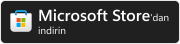

Windows
Windows 10 ve 11, 64 bit. Standart bir yükleyici, yönetici hakkı gerekmez.
Windows için ücretsiz indirClipSD-1.32.1-Setup.exe · 32 MB · sürüm 1.32.1
SHA-256 sağlama toplamı: d587fbe9ac4dc2197f3bd1d4efc20923ca331586b83bddd806385404417eaeca

Mağaza sürümü Mağaza üzerinden güncellenir.
Kod imzalama politikası (Code signing policy)
- Simge saatin yanında görünür. ClipSD Windows ile birlikte başlar; yükleyicide bu işareti kaldırabilirsiniz
- Görüntüden metni Windows'un yerleşik tanıma özelliği okur
- Bir dildeki metin, o dil Windows'ta kuruluysa tanınır